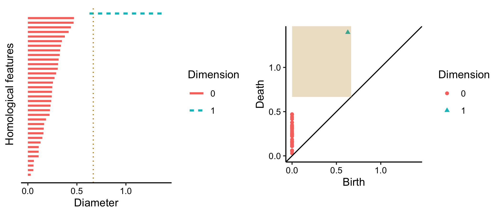
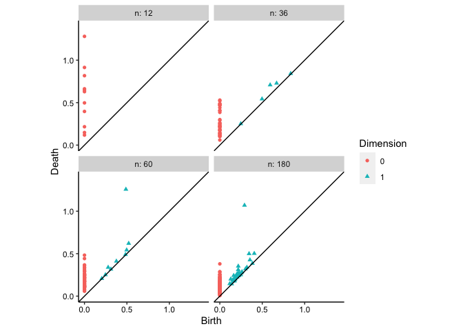

Overview
The ggtda package provides ggplot2 layers for the visualization of constructions and statistics arising from topological data analysis.
Installation
The development version can be installed used the remotes package:
# install from GitHub
remotes::install_github("tdaverse/ggtda", vignettes = TRUE)For an introduction to package functionality, read the vignettes:
# read vignettes
vignette(topic = "visualize-persistence", package = "ggtda")
vignette(topic = "illustrate-constructions", package = "ggtda")
vignette(topic = "grouped-list-data", package = "ggtda")We aim to submit to CRAN in Spring 2024!
Example
# attach {ggtda}
library(ggtda)
#> Loading required package: rlang
#> Loading required package: ggplot2ggtda visualizes persistence data but also includes stat layers for common TDA constructions. This example illustrates them using an artificial point cloud X and its persistent homology (PH) computed with ripserr:
# generate a noisy circle
n <- 36
set.seed(0)
t <- stats::runif(n = n, min = 0, max = 2*pi)
d <- data.frame(
x = cos(t) + stats::rnorm(n = n, mean = 0, sd = .2),
y = sin(t) + stats::rnorm(n = n, mean = 0, sd = .2)
)
# plot the data
ggplot(d, aes(x, y)) + geom_point() + coord_equal() + theme_bw()
# compute the persistent homology
ph <- as.data.frame(ripserr::vietoris_rips(as.matrix(d), dim = 1))
#> Warning in vietoris_rips.matrix(as.matrix(d), dim = 1): `dim` parameter has
#> been deprecated; use `max_dim` instead.
print(head(ph, n = 12))
#> dimension birth death
#> 1 0 0 0.02903148
#> 2 0 0 0.05579919
#> 3 0 0 0.05754819
#> 4 0 0 0.06145429
#> 5 0 0 0.10973364
#> 6 0 0 0.11006440
#> 7 0 0 0.11076601
#> 8 0 0 0.12968679
#> 9 0 0 0.14783527
#> 10 0 0 0.15895889
#> 11 0 0 0.16171041
#> 12 0 0 0.16548606
ph <- transform(ph, dim = as.factor(dimension))Topological constructions
To first illustrate constructions, pick a proximity, or threshold, to consider points in the cloud to be neighbors:
# choose a proximity threshold
prox <- 2/3The homology Hk(X) of a point cloud is uninteresting (H0(X) = |X| and Hk(X) = 0 for k > 0). The most basic space of interest to the topological data analyst is the union of a ball cover Br(X) of X—a ball of common radius r around each point. The common radius will be r= prox / 2.
The figure below compares the ball cover (left) with the Vietoris (or Rips) complex VRr(X) constructed using the same proximity (right). The complex comprises a simplex at each subset of points having diameter at most prox—that is, each pair of which are within prox of each other. A key result in TDA is that the homology of the ball union is “very close” to that of the complex.
# visualize disks of fixed radii and the Vietoris complex for this proximity
p_d <- ggplot(d, aes(x = x, y = y)) +
coord_fixed() +
geom_disk(radius = prox/2, fill = "aquamarine3") +
geom_point() +
theme_bw()
p_sc <- ggplot(d, aes(x = x, y = y)) +
coord_fixed() +
stat_simplicial_complex(diameter = prox, fill = "darkgoldenrod") +
theme_bw() +
theme(legend.position = "none")
# combine the plots
gridExtra::grid.arrange(
p_d, p_sc,
layout_matrix = matrix(c(1, 2), nrow = 1)
)
#> Warning: Using alpha for a discrete variable is not advised.This cover and simplex clearly contain a non-trivial 1-cycle (loop), which makes H1(Br(X)) = H1(VRr(X)) = 1. Persistent homology encodes the homology group ranks across the full range 0 ≤ r < ∞, corresponding to the full filtration of simplicial complexes constructed on the point cloud.
Persistence data
We can visualize the persistence data using a barcode (left) and a persistence diagram (right). In the barcode plot, the dashed line indicates the cutoff at the proximity prox; in the persistence diagram plot, the fundamental box contains the features that are detectable at this cutoff.
# visualize the persistence data, indicating cutoffs at this proximity
p_bc <- ggplot(ph, aes(start = birth, end = death)) +
geom_barcode(linewidth = 1, aes(color = dim, linetype = dim)) +
labs(x = "Diameter", y = "Homological features",
color = "Dimension", linetype = "Dimension") +
geom_vline(xintercept = prox, color = "darkgoldenrod", linetype = "dotted") +
theme_barcode()
max_prox <- max(ph$death)
p_pd <- ggplot(ph) +
coord_fixed() +
stat_persistence(aes(start = birth, end = death, colour = dim, shape = dim)) +
geom_abline(slope = 1) +
labs(x = "Birth", y = "Death", color = "Dimension", shape = "Dimension") +
lims(x = c(0, max_prox), y = c(0, max_prox)) +
geom_fundamental_box(
t = prox,
fill = "darkgoldenrod", color = "transparent"
) +
theme_persist()
# combine the plots
gridExtra::grid.arrange(
p_bc, p_pd,
layout_matrix = matrix(c(1, 2), nrow = 1)
)The barcode lines are color- and linetype-coded by feature dimension: the 0-dimensional features, i.e. the gaps between connected components, versus the 1-dimensional feature, i.e. the loop. These groups of lines do not overlap, which means that the loop exists only in the persistence domain where all the data points are part of the same connected component. Our choice of prox is between the birth and death of the loop, which is why the complex above recovers it.
The persistence diagram shows that the loop persists for longer than any of the gaps. This is consistent with the gaps being artifacts of the sampling procedure but the loop being an intrinsic property of the underlying space.
Composite plots
TDA almost always involves comparisons of topological data between spaces. To illustrate such a comparison, we construct a larger sample but then examine the persistence of its cumulative subsets:
# larger point cloud sampled from a noisy circle
set.seed(0)
n <- 180
t <- stats::runif(n = n, min = 0, max = 2*pi)
d <- data.frame(
x = cos(t) + stats::rnorm(n = n, mean = 0, sd = .2),
y = sin(t) + stats::rnorm(n = n, mean = 0, sd = .2)
)
# list of cumulative point clouds
ns <- c(12, 36, 60, 180)
dl <- lapply(ns, function(n) d[seq(n), ])First we construct a nested data frame containing these subsets and plot their Vietoris complexes. (We specify the simplextree engine to reduce runtime.)
# formatted as grouped data
dg <- do.call(rbind, dl)
dg$n <- rep(ns, vapply(dl, nrow, 0L))
# faceted plots of cumulative simplicial complexes
ggplot(dg, aes(x, y)) +
coord_fixed() +
facet_wrap(facets = vars(n), labeller = label_both) +
stat_simplicial_complex(
diameter = prox, fill = "darkgoldenrod",
engine = "simplextree"
) +
theme_bw() +
theme(legend.position = "none")
#> Warning: Using alpha for a discrete variable is not advised.
The Vietoris complexes on these subsets for the fixed proximity are not a filtration; instead they show us how increasing the sample affects the detection of homology at that threshold. Notice that, while a cycle exists at n = 36, the “true” cycle is only detected at n = 60.
We can also conveniently plot the persistence diagrams from all four cumulative subsets, this time using a list-column of data sets passed to the dataset aesthetic:
# nested data frame of samples of different cumulative sizes
ds <- data.frame(n = ns, d = I(dl))
print(ds)
#> n d
#> 1 12 c(1.0565....
#> 2 36 c(1.0565....
#> 3 60 c(1.0565....
#> 4 180 c(1.0565....
# faceted plot of persistence diagrams
ggplot(ds, aes(dataset = d)) +
coord_fixed() +
facet_wrap(facets = vars(n), labeller = label_both) +
stat_persistence(aes(colour = after_stat(factor(dimension)),
shape = after_stat(factor(dimension)))) +
geom_abline(slope = 1) +
labs(x = "Birth", y = "Death", color = "Dimension", shape = "Dimension") +
lims(x = c(0, max_prox), y = c(0, max_prox)) +
theme_persist()
#> Warning: Removed 2 rows containing missing values (`geom_point()`).
The diagrams reveal that a certain sample is necessary to distinguish bona fide features from noise, as only occurs here at n = 36. While the true feature retains about the same persistence (death value less birth value) from diagram to diagram, the persistence of the noise gradually lowers.
Contribute
To contribute to ggtda, you can create issues for any bugs you find or any suggestions you have on the issues page.
If you have a feature in mind you think will be useful for others, you can also fork this repository and create a pull request.